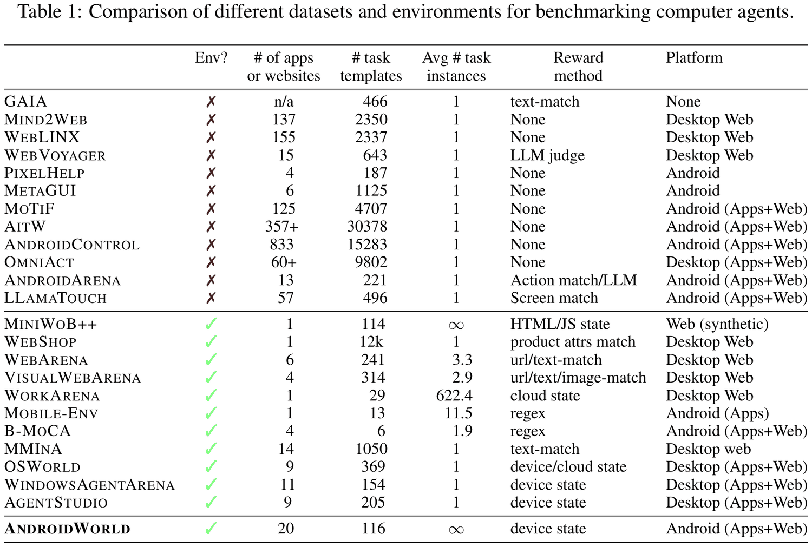
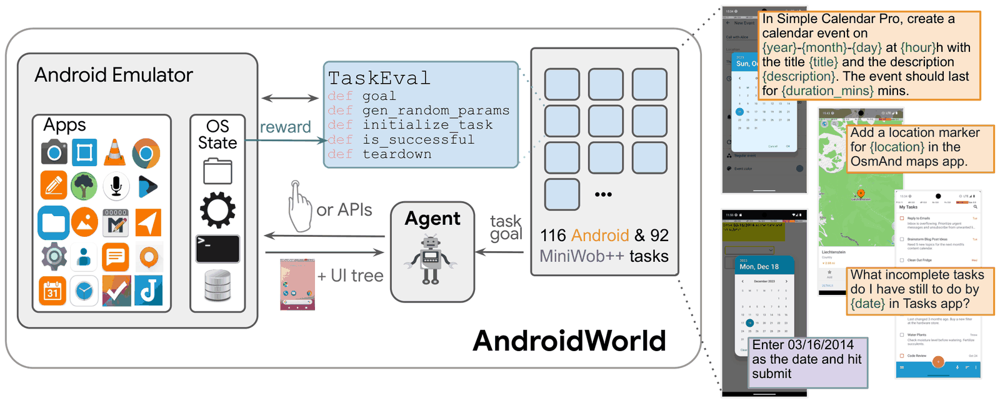
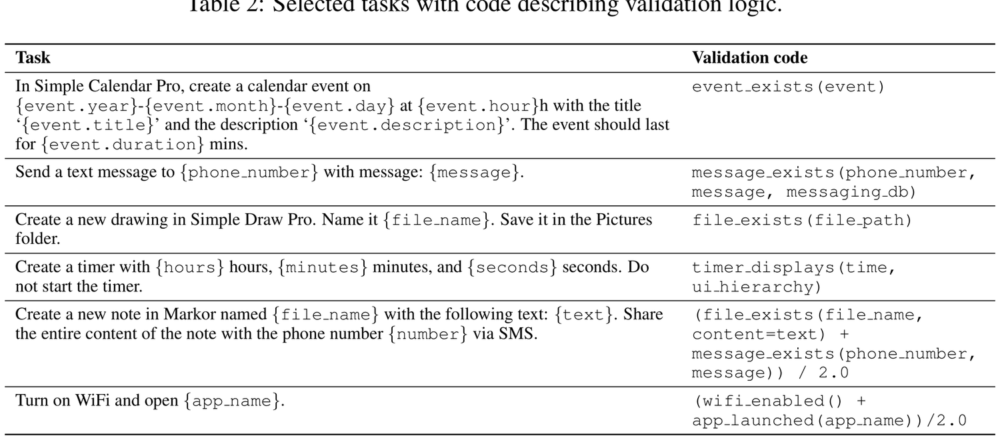
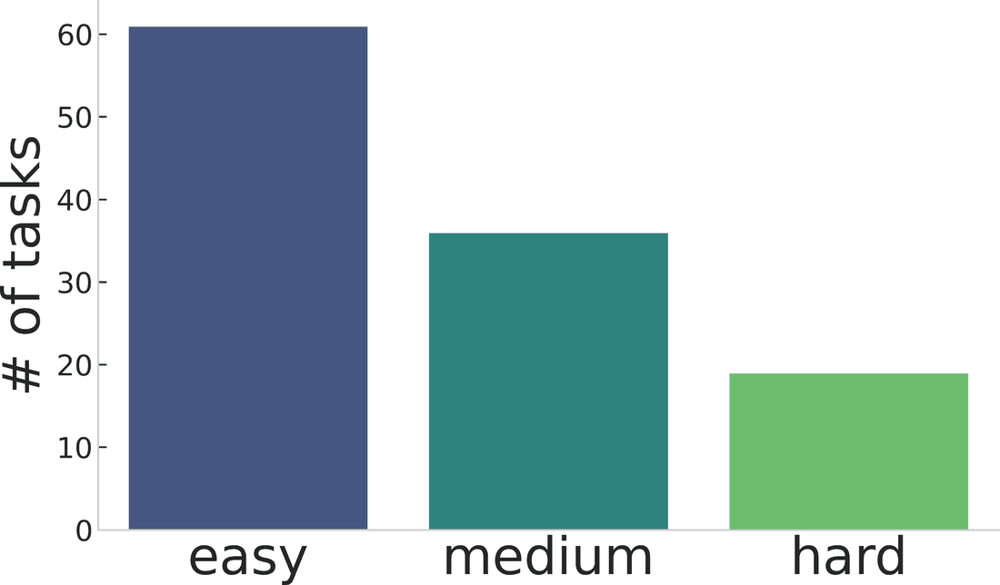
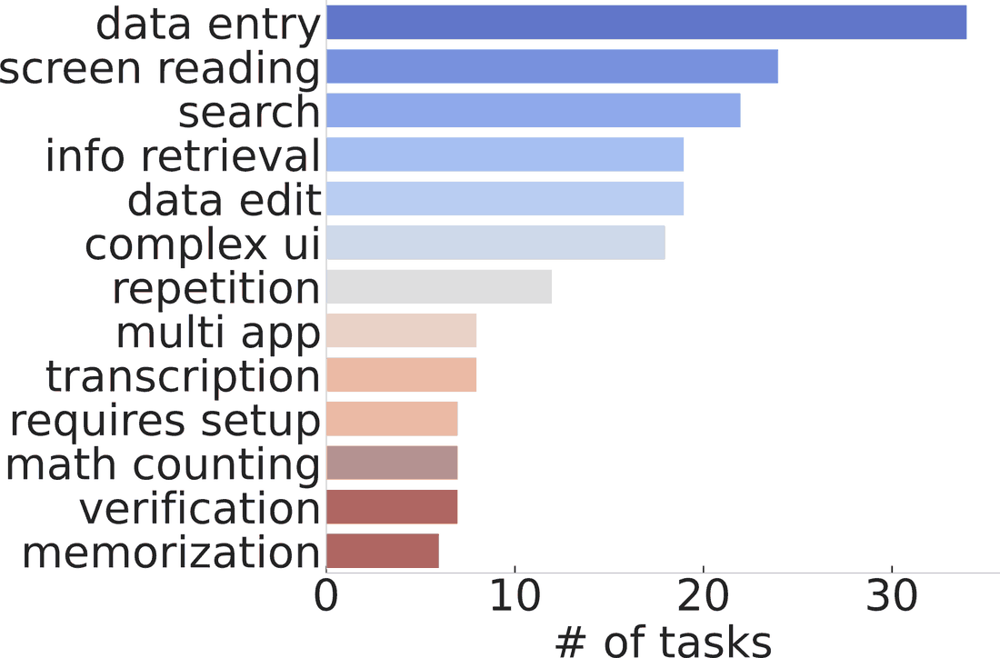
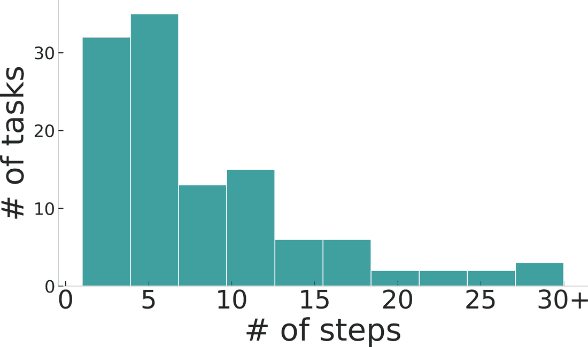
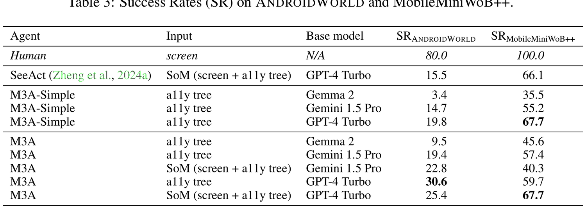
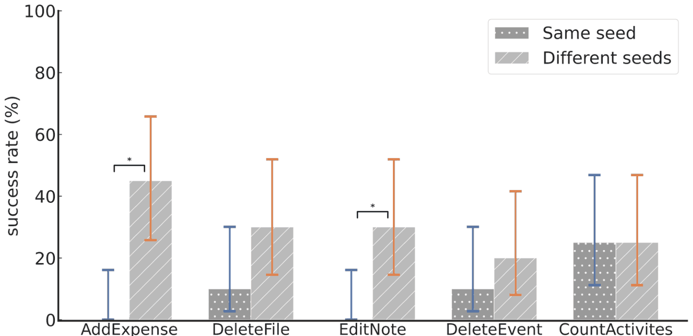

How should we evaluate an agent that operates a real phone?
Old benchmarks asked whether the agent followed the right sequence of actions — not whether the task got done.
AITW、AndroidControl 等数据集把 Agent 的每一步动作与人类示范逐步比对。
真实环境里可以走多条不同路径，环境本身非确定，Agent 还会从错误中自我纠正。
论文主张：只有直接对最终状态给奖励，才是评测的金标准。
Env? and Avg # task instances — the two columns that separate datasets from environments.

The contribution is the environment. M3A is a baseline — the target for others to beat.

goal / initialize_task / is_successful / teardown 五个方法，把差异收敛到一个契约里。
116 个安卓任务，外加把 MobileMiniWoB++ 的 92 个网页任务搬进同一框架。
图中 reward 箭头从模拟器的 OS State 指向 TaskEval——这就是全篇的机制核心。
Dynamic at the parameter level — not at the task-structure level.
Reward comes from the device's final state, not from the agent's action sequence.

Difficulty, capability and step distribution, as rated by humans.



Making a real environment reproducible.
Pixel 6 模拟器 · Android 13；开源应用锁定 F-Droid 固定版本。
设备时间锁死 2023-10-15 15:34 UTC，消除时间相关行为的不确定性。
每个任务独立维护初始化 / 判分 / 清理三段逻辑，互不污染。
只选无需登录鉴权的应用，数据全部落在设备本地，可随时重置。
Ample headroom — but not a floor.

Performance depends on scaffolding, not only on the base model.
最小化提示词，没有操作指南，也没有反思机制。
加入 ReAct / Reflexion 式提示、安卓操作指南与界面表示规范化。
Task parameterization fundamentally changes task difficulty.

Not the largest, not the first. The value is in the combination.
应用数 20、任务数 116，都不算大——AITW 有 3 万条数据。
也不是唯一采用 state-based 评测的 benchmark，OSWorld 已在做桌面版。
第一个把下面五件事完整组合成公开、可复现框架的工作：
真实安卓环境 · 参数化实例 · 可执行 Agent · 最终状态评测 · 鲁棒性实验
The framework scales. Plugging in an arbitrary app does not.
每个任务都绑定特定应用与特定的起点构造方式。
随机参数的范围、UI 与动作的映射，都需逐应用适配。
耦合最深的一环，必须知道该应用的数据库结构。
A significant step from static benchmarks toward open-world agent evaluation — not the destination.
「它解决了 Android Agent 的泛化问题」
任务结构和应用范围仍由人工设计，动态只是参数级的。
「它推动了 Agent Benchmark 从静态轨迹、固定任务，走向真实环境、动态实例化、结果导向评测。」
Thank you.